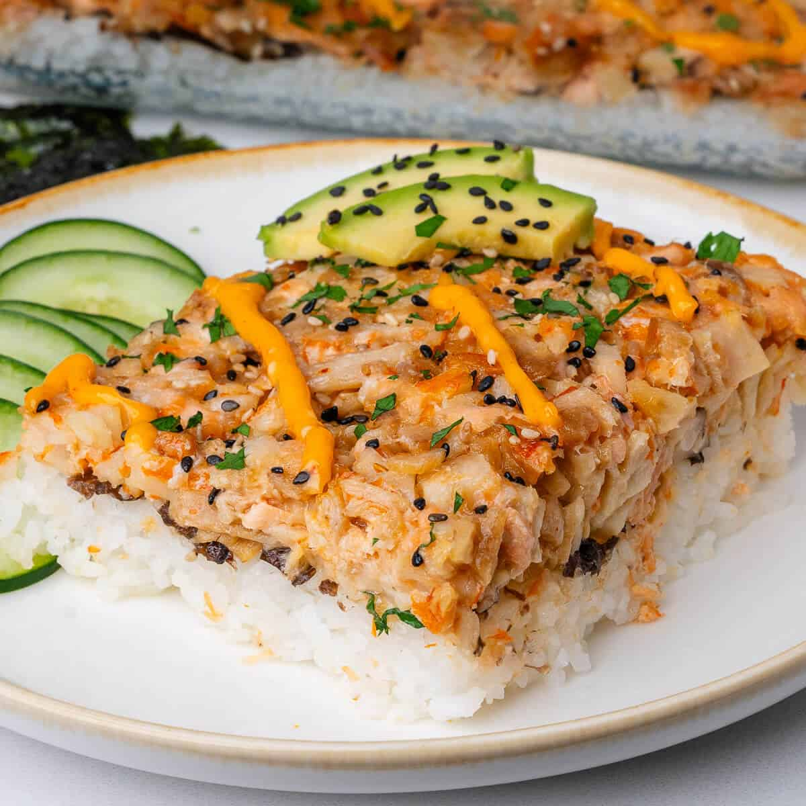

This sushi bake is a creamy, layered casserole featuring seasoned sushi rice, a rich and savory salmon filling, and roasted seaweed, all topped with fresh avocado for the perfect balance of flavors and textures. Warm, comforting, and easy to serve, it's a fun twist on traditional sushi that's perfect for sharing with family and friends.